Reservoir 2023
Festival für Klang- und Medienkunst
am Samstag, 5. August
an der Linachtalsperre

Nachmittagsprogramm (15:00 bis 20:00 Uhr)
- Alphörner Augmented, Performance der Schönwalder Alphornbläser Schönwald mit Peter Böhm
- Grauton Installation, Klanginstallation von Karen Geyer
- Music for Rackets, partizipative Klanginstallation von Sascha Brosamer
- Polymetrischer Loopsampler, partizipative Klanginstallation von Norbert Schnell
- Based on In C, interaktive Klanginstallation von Roland Sproll und Joachim Goßmann mit der Musik von Terry
Riley
- Spirophon I, Klanginstallation von Roland Sproll
- Kleines Lernen, generative Klanginstallation von Luc Döbereiner
- Flo & Joe, Handpan Duo mit Florian Röhrl und Jochen Dreier
- Zirbinsky, musikalische Darbietung
Abendprogramm (ab 21:00 Uhr)
- Deviation II, audiovisuelle Performance von Felix Kubin und Josephin Böttger
- Grauton Performance, Performance von Karen Geyer
- Frische Fische, audiovisuelle Performance von Timo Dufner
- Tigermükkn, partizipative Performance von Sascha Brosammer
- Re-Barraging Bar Rage at the Barrage, Filmvorführung mit Live-Vertonung von Norman Müller
Beteiligte Künstler und Künstlerinnen
- Josephin Böttger
- Felix Kubin
- Karen Geyer
- Peter Böhm
- Alphornbläser Schönwald
- Timo Dufner
- Sascha Brosammer
- Roland Sproll
- Norman Müller
- Zirbinsky
Stay tuned...